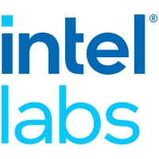

Research Interests
Core areas of focus
WiFi-based sensing applications — localization, activity recognition, health monitoring
Wireless communications systems and signal processing
Next-generation wireless networks (5G/6G)
News
Recent updates
Work Experience
Professional positions held
- Analyzed wireless protocols and algorithms for 5G mmWave networks
- Simulated the 5G access network at link-level and system-level

- Developed an interference mitigation solution for WiFi/LTE coexistence on Intel platforms
- TA coursework: wireless communications, analog/digital communication systems, signal processing, information & coding theory, and electric circuits
Research Projects
Selected projects from UCSB and beyond
- Developed a model relating the number of people to the statistical properties of the WiFi channel
- Demonstrated results in complex multi-room environments
- Extracted gait information from WiFi and video independently
- Matched subjects across modalities for identification
- Characterized WiFi signal response to seizure movements
- Developed and validated a seizure detection algorithm
- Transferred knowledge from video to RF domain
- Demonstrated on human activity recognition tasks
- Proposed a particle-filter-based single-person tracking algorithm
- Extended to multi-person tracking with 3 distributed laptops
- Mathematically linked AoA to power spectrum content
- Experimentally validated using a robot-synthesized antenna array
- Developed power allocation strategies with QoS constraints
- Designed base station precoders to support D2D links
Education
Academic background
University of California, Santa Barbara — 2021
Dissertation: Enabling Novel Sensing Applications with Everyday WiFi Signals
Cairo University, Egypt — 2015
Thesis: Device-to-Device Communications Deployment in Massive MIMO Networks
Cairo University, Egypt — 2012
Electrical Engineering · Distinction with Honors
Publications
Patents, journals, and conference papers
* Equal contribution
* Equal contribution
About Me
Beyond the research
I am a husband to a lovely wife, Rana, and a father to lovely children, Mariam and Omar. Outside of work, I enjoy photography, traveling, The Lord of the Rings, and football — or as they call it here, soccer!